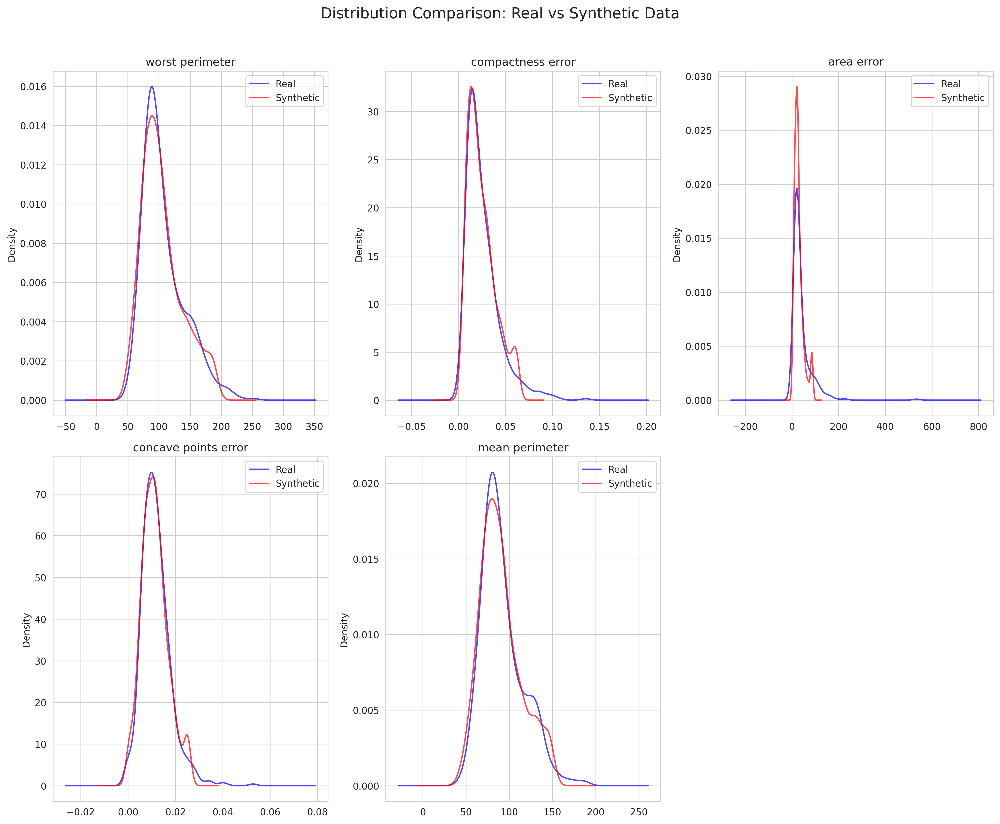
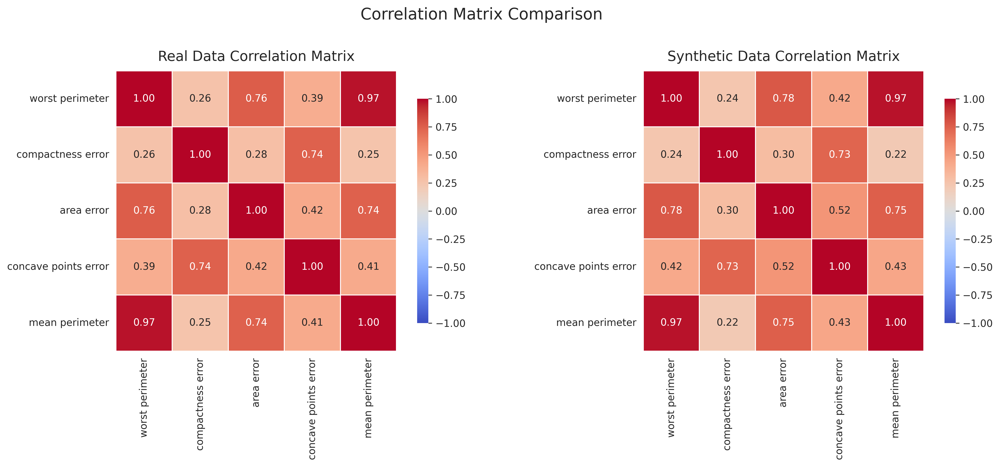

Dataset Overview
| Metric |
Real Data |
Synthetic Data |
| Number of rows |
569 |
1000 |
| Number of columns |
31 |
31 |
| Memory usage |
0.13 MB |
0.24 MB |
Generator Information
Method: gaussian, Samples: 1000, Random State: None
Overall Quality Metrics
| Metric |
Value |
Interpretation |
| real_data_size |
569.0000 |
Acceptable |
| synthetic_data_size |
569.0000 |
Acceptable |
| size_ratio |
1.0000 |
Acceptable |
| num_numerical_columns |
30.0000 |
Acceptable |
| num_categorical_columns |
0.0000 |
Acceptable |
| avg_ks_statistic |
0.0640 |
Distributions are very similar |
| avg_jensen_shannon_dist |
0.1537 |
Acceptable |
| avg_mean_relative_error |
0.0500 |
Excellent |
| avg_std_relative_error |
0.1224 |
Good |
| correlation_mean_difference |
0.0460 |
Excellent |
| correlation_max_difference |
0.2107 |
Acceptable |
| privacy_risk |
0.0000 |
Acceptable |
| utility_score |
0.9450 |
Excellent |
| statistical_similarity |
0.9450 |
Acceptable |
| privacy_score |
1.0000 |
Excellent |
| quality_score |
0.9587 |
Excellent |
Numerical Column Metrics
Column: mean radius
| Metric |
Value |
| mean_real |
14.1273 |
| mean_synthetic |
13.7734 |
| mean_relative_error |
0.0250 |
| std_real |
3.5240 |
| std_synthetic |
3.4317 |
| std_relative_error |
0.0262 |
| min_real |
6.9810 |
| min_synthetic |
6.9810 |
| max_real |
28.1100 |
| max_synthetic |
21.9000 |
| Kolmogorov-Smirnov statistic |
0.0721 |
| Kolmogorov-Smirnov p-value |
0.1042 |
| Jensen-Shannon distance |
0.1542 |
Column: mean texture
| Metric |
Value |
| mean_real |
19.2896 |
| mean_synthetic |
19.0089 |
| mean_relative_error |
0.0146 |
| std_real |
4.3010 |
| std_synthetic |
4.3935 |
| std_relative_error |
0.0215 |
| min_real |
9.7100 |
| min_synthetic |
9.7240 |
| max_real |
39.2800 |
| max_synthetic |
30.2450 |
| Kolmogorov-Smirnov statistic |
0.0492 |
| Kolmogorov-Smirnov p-value |
0.4965 |
| Jensen-Shannon distance |
0.1583 |
Column: mean perimeter
| Metric |
Value |
| mean_real |
91.9690 |
| mean_synthetic |
89.4796 |
| mean_relative_error |
0.0271 |
| std_real |
24.2990 |
| std_synthetic |
23.6588 |
| std_relative_error |
0.0263 |
| min_real |
43.7900 |
| min_synthetic |
43.7900 |
| max_real |
188.5000 |
| max_synthetic |
147.4950 |
| Kolmogorov-Smirnov statistic |
0.0773 |
| Kolmogorov-Smirnov p-value |
0.0666 |
| Jensen-Shannon distance |
0.1555 |
Column: mean area
| Metric |
Value |
| mean_real |
654.8891 |
| mean_synthetic |
614.4989 |
| mean_relative_error |
0.0617 |
| std_real |
351.9141 |
| std_synthetic |
309.4582 |
| std_relative_error |
0.1206 |
| min_real |
143.5000 |
| min_synthetic |
143.5000 |
| max_real |
2501.0000 |
| max_synthetic |
1326.3000 |
| Kolmogorov-Smirnov statistic |
0.0844 |
| Kolmogorov-Smirnov p-value |
0.0348 |
| Jensen-Shannon distance |
0.1823 |
Column: mean smoothness
| Metric |
Value |
| mean_real |
0.0964 |
| mean_synthetic |
0.0953 |
| mean_relative_error |
0.0107 |
| std_real |
0.0141 |
| std_synthetic |
0.0138 |
| std_relative_error |
0.0211 |
| min_real |
0.0526 |
| min_synthetic |
0.0592 |
| max_real |
0.1634 |
| max_synthetic |
0.1337 |
| Kolmogorov-Smirnov statistic |
0.0475 |
| Kolmogorov-Smirnov p-value |
0.5439 |
| Jensen-Shannon distance |
0.1011 |
Column: mean compactness
| Metric |
Value |
| mean_real |
0.1043 |
| mean_synthetic |
0.0989 |
| mean_relative_error |
0.0525 |
| std_real |
0.0528 |
| std_synthetic |
0.0474 |
| std_relative_error |
0.1032 |
| min_real |
0.0194 |
| min_synthetic |
0.0264 |
| max_real |
0.3454 |
| max_synthetic |
0.2286 |
| Kolmogorov-Smirnov statistic |
0.0510 |
| Kolmogorov-Smirnov p-value |
0.4511 |
| Jensen-Shannon distance |
0.1374 |
Column: mean concavity
| Metric |
Value |
| mean_real |
0.0888 |
| mean_synthetic |
0.0830 |
| mean_relative_error |
0.0650 |
| std_real |
0.0797 |
| std_synthetic |
0.0728 |
| std_relative_error |
0.0872 |
| min_real |
0.0000 |
| min_synthetic |
0.0007 |
| max_real |
0.4268 |
| max_synthetic |
0.2824 |
| Kolmogorov-Smirnov statistic |
0.0668 |
| Kolmogorov-Smirnov p-value |
0.1581 |
| Jensen-Shannon distance |
0.1588 |
Column: mean concave points
| Metric |
Value |
| mean_real |
0.0489 |
| mean_synthetic |
0.0448 |
| mean_relative_error |
0.0836 |
| std_real |
0.0388 |
| std_synthetic |
0.0377 |
| std_relative_error |
0.0286 |
| min_real |
0.0000 |
| min_synthetic |
0.0000 |
| max_real |
0.2012 |
| max_synthetic |
0.1545 |
| Kolmogorov-Smirnov statistic |
0.0949 |
| Kolmogorov-Smirnov p-value |
0.0119 |
| Jensen-Shannon distance |
0.1543 |
Column: mean symmetry
| Metric |
Value |
| mean_real |
0.1812 |
| mean_synthetic |
0.1803 |
| mean_relative_error |
0.0046 |
| std_real |
0.0274 |
| std_synthetic |
0.0268 |
| std_relative_error |
0.0214 |
| min_real |
0.1060 |
| min_synthetic |
0.1112 |
| max_real |
0.3040 |
| max_synthetic |
0.2464 |
| Kolmogorov-Smirnov statistic |
0.0281 |
| Kolmogorov-Smirnov p-value |
0.9782 |
| Jensen-Shannon distance |
0.1527 |
Column: mean fractal dimension
| Metric |
Value |
| mean_real |
0.0628 |
| mean_synthetic |
0.0625 |
| mean_relative_error |
0.0045 |
| std_real |
0.0071 |
| std_synthetic |
0.0065 |
| std_relative_error |
0.0745 |
| min_real |
0.0500 |
| min_synthetic |
0.0500 |
| max_real |
0.0974 |
| max_synthetic |
0.0787 |
| Kolmogorov-Smirnov statistic |
0.0387 |
| Kolmogorov-Smirnov p-value |
0.7891 |
| Jensen-Shannon distance |
0.1221 |
Column: radius error
| Metric |
Value |
| mean_real |
0.4052 |
| mean_synthetic |
0.3578 |
| mean_relative_error |
0.1169 |
| std_real |
0.2773 |
| std_synthetic |
0.1761 |
| std_relative_error |
0.3650 |
| min_real |
0.1115 |
| min_synthetic |
0.1115 |
| max_real |
2.8730 |
| max_synthetic |
0.8487 |
| Kolmogorov-Smirnov statistic |
0.0738 |
| Kolmogorov-Smirnov p-value |
0.0901 |
| Jensen-Shannon distance |
0.1622 |
Column: texture error
| Metric |
Value |
| mean_real |
1.2169 |
| mean_synthetic |
1.2068 |
| mean_relative_error |
0.0082 |
| std_real |
0.5516 |
| std_synthetic |
0.5119 |
| std_relative_error |
0.0721 |
| min_real |
0.3602 |
| min_synthetic |
0.3602 |
| max_real |
4.8850 |
| max_synthetic |
2.4341 |
| Kolmogorov-Smirnov statistic |
0.0351 |
| Kolmogorov-Smirnov p-value |
0.8740 |
| Jensen-Shannon distance |
0.1500 |
Column: perimeter error
| Metric |
Value |
| mean_real |
2.8661 |
| mean_synthetic |
2.5909 |
| mean_relative_error |
0.0960 |
| std_real |
2.0219 |
| std_synthetic |
1.3070 |
| std_relative_error |
0.3535 |
| min_real |
0.7570 |
| min_synthetic |
0.7570 |
| max_real |
21.9800 |
| max_synthetic |
5.9835 |
| Kolmogorov-Smirnov statistic |
0.0668 |
| Kolmogorov-Smirnov p-value |
0.1581 |
| Jensen-Shannon distance |
0.1715 |
Column: area error
| Metric |
Value |
| mean_real |
40.3371 |
| mean_synthetic |
29.1490 |
| mean_relative_error |
0.2774 |
| std_real |
45.4910 |
| std_synthetic |
19.4634 |
| std_relative_error |
0.5721 |
| min_real |
6.8020 |
| min_synthetic |
6.8020 |
| max_real |
542.2000 |
| max_synthetic |
86.2000 |
| Kolmogorov-Smirnov statistic |
0.1142 |
| Kolmogorov-Smirnov p-value |
0.0012 |
| Jensen-Shannon distance |
0.1943 |
Column: smoothness error
| Metric |
Value |
| mean_real |
0.0070 |
| mean_synthetic |
0.0069 |
| mean_relative_error |
0.0158 |
| std_real |
0.0030 |
| std_synthetic |
0.0025 |
| std_relative_error |
0.1648 |
| min_real |
0.0017 |
| min_synthetic |
0.0017 |
| max_real |
0.0311 |
| max_synthetic |
0.0126 |
| Kolmogorov-Smirnov statistic |
0.0527 |
| Kolmogorov-Smirnov p-value |
0.4080 |
| Jensen-Shannon distance |
0.1632 |
Column: compactness error
| Metric |
Value |
| mean_real |
0.0255 |
| mean_synthetic |
0.0240 |
| mean_relative_error |
0.0586 |
| std_real |
0.0179 |
| std_synthetic |
0.0147 |
| std_relative_error |
0.1788 |
| min_real |
0.0023 |
| min_synthetic |
0.0034 |
| max_real |
0.1354 |
| max_synthetic |
0.0615 |
| Kolmogorov-Smirnov statistic |
0.0492 |
| Kolmogorov-Smirnov p-value |
0.4965 |
| Jensen-Shannon distance |
0.1567 |
Column: concavity error
| Metric |
Value |
| mean_real |
0.0319 |
| mean_synthetic |
0.0295 |
| mean_relative_error |
0.0751 |
| std_real |
0.0302 |
| std_synthetic |
0.0229 |
| std_relative_error |
0.2404 |
| min_real |
0.0000 |
| min_synthetic |
0.0000 |
| max_real |
0.3960 |
| max_synthetic |
0.0825 |
| Kolmogorov-Smirnov statistic |
0.0984 |
| Kolmogorov-Smirnov p-value |
0.0080 |
| Jensen-Shannon distance |
0.1719 |
Column: concave points error
| Metric |
Value |
| mean_real |
0.0118 |
| mean_synthetic |
0.0112 |
| mean_relative_error |
0.0548 |
| std_real |
0.0062 |
| std_synthetic |
0.0058 |
| std_relative_error |
0.0602 |
| min_real |
0.0000 |
| min_synthetic |
0.0000 |
| max_real |
0.0528 |
| max_synthetic |
0.0253 |
| Kolmogorov-Smirnov statistic |
0.0721 |
| Kolmogorov-Smirnov p-value |
0.1042 |
| Jensen-Shannon distance |
0.1338 |
Column: symmetry error
| Metric |
Value |
| mean_real |
0.0205 |
| mean_synthetic |
0.0202 |
| mean_relative_error |
0.0174 |
| std_real |
0.0083 |
| std_synthetic |
0.0068 |
| std_relative_error |
0.1828 |
| min_real |
0.0079 |
| min_synthetic |
0.0079 |
| max_real |
0.0790 |
| max_synthetic |
0.0360 |
| Kolmogorov-Smirnov statistic |
0.0475 |
| Kolmogorov-Smirnov p-value |
0.5439 |
| Jensen-Shannon distance |
0.1711 |
Column: fractal dimension error
| Metric |
Value |
| mean_real |
0.0038 |
| mean_synthetic |
0.0036 |
| mean_relative_error |
0.0474 |
| std_real |
0.0026 |
| std_synthetic |
0.0018 |
| std_relative_error |
0.3215 |
| min_real |
0.0009 |
| min_synthetic |
0.0010 |
| max_real |
0.0298 |
| max_synthetic |
0.0080 |
| Kolmogorov-Smirnov statistic |
0.0510 |
| Kolmogorov-Smirnov p-value |
0.4511 |
| Jensen-Shannon distance |
0.1683 |
Column: worst radius
| Metric |
Value |
| mean_real |
16.2692 |
| mean_synthetic |
15.8155 |
| mean_relative_error |
0.0279 |
| std_real |
4.8332 |
| std_synthetic |
4.6530 |
| std_relative_error |
0.0373 |
| min_real |
7.9300 |
| min_synthetic |
7.9300 |
| max_real |
36.0400 |
| max_synthetic |
27.4600 |
| Kolmogorov-Smirnov statistic |
0.0685 |
| Kolmogorov-Smirnov p-value |
0.1381 |
| Jensen-Shannon distance |
0.1715 |
Column: worst texture
| Metric |
Value |
| mean_real |
25.6772 |
| mean_synthetic |
25.3331 |
| mean_relative_error |
0.0134 |
| std_real |
6.1463 |
| std_synthetic |
6.4785 |
| std_relative_error |
0.0541 |
| min_real |
12.0200 |
| min_synthetic |
12.0200 |
| max_real |
49.5400 |
| max_synthetic |
42.6800 |
| Kolmogorov-Smirnov statistic |
0.0580 |
| Kolmogorov-Smirnov p-value |
0.2943 |
| Jensen-Shannon distance |
0.1354 |
Column: worst perimeter
| Metric |
Value |
| mean_real |
107.2612 |
| mean_synthetic |
103.9611 |
| mean_relative_error |
0.0308 |
| std_real |
33.6025 |
| std_synthetic |
32.3793 |
| std_relative_error |
0.0364 |
| min_real |
50.4100 |
| min_synthetic |
50.4100 |
| max_real |
251.2000 |
| max_synthetic |
187.3350 |
| Kolmogorov-Smirnov statistic |
0.0773 |
| Kolmogorov-Smirnov p-value |
0.0666 |
| Jensen-Shannon distance |
0.1573 |
Column: worst area
| Metric |
Value |
| mean_real |
880.5831 |
| mean_synthetic |
817.3126 |
| mean_relative_error |
0.0719 |
| std_real |
569.3570 |
| std_synthetic |
482.5983 |
| std_relative_error |
0.1524 |
| min_real |
185.2000 |
| min_synthetic |
185.2000 |
| max_real |
4254.0000 |
| max_synthetic |
1937.0500 |
| Kolmogorov-Smirnov statistic |
0.0861 |
| Kolmogorov-Smirnov p-value |
0.0294 |
| Jensen-Shannon distance |
0.2182 |
Column: worst smoothness
| Metric |
Value |
| mean_real |
0.1324 |
| mean_synthetic |
0.1305 |
| mean_relative_error |
0.0139 |
| std_real |
0.0228 |
| std_synthetic |
0.0227 |
| std_relative_error |
0.0077 |
| min_real |
0.0712 |
| min_synthetic |
0.0725 |
| max_real |
0.2226 |
| max_synthetic |
0.1901 |
| Kolmogorov-Smirnov statistic |
0.0457 |
| Kolmogorov-Smirnov p-value |
0.5928 |
| Jensen-Shannon distance |
0.1014 |
Column: worst compactness
| Metric |
Value |
| mean_real |
0.2543 |
| mean_synthetic |
0.2376 |
| mean_relative_error |
0.0654 |
| std_real |
0.1573 |
| std_synthetic |
0.1393 |
| std_relative_error |
0.1146 |
| min_real |
0.0273 |
| min_synthetic |
0.0359 |
| max_real |
1.0580 |
| max_synthetic |
0.6270 |
| Kolmogorov-Smirnov statistic |
0.0598 |
| Kolmogorov-Smirnov p-value |
0.2618 |
| Jensen-Shannon distance |
0.1497 |
Column: worst concavity
| Metric |
Value |
| mean_real |
0.2722 |
| mean_synthetic |
0.2551 |
| mean_relative_error |
0.0626 |
| std_real |
0.2086 |
| std_synthetic |
0.1986 |
| std_relative_error |
0.0480 |
| min_real |
0.0000 |
| min_synthetic |
0.0003 |
| max_real |
1.2520 |
| max_synthetic |
0.7855 |
| Kolmogorov-Smirnov statistic |
0.0668 |
| Kolmogorov-Smirnov p-value |
0.1581 |
| Jensen-Shannon distance |
0.1462 |
Column: worst concave points
| Metric |
Value |
| mean_real |
0.1146 |
| mean_synthetic |
0.1065 |
| mean_relative_error |
0.0707 |
| std_real |
0.0657 |
| std_synthetic |
0.0670 |
| std_relative_error |
0.0192 |
| min_real |
0.0000 |
| min_synthetic |
0.0000 |
| max_real |
0.2910 |
| max_synthetic |
0.2910 |
| Kolmogorov-Smirnov statistic |
0.0808 |
| Kolmogorov-Smirnov p-value |
0.0485 |
| Jensen-Shannon distance |
0.1111 |
Column: worst symmetry
| Metric |
Value |
| mean_real |
0.2901 |
| mean_synthetic |
0.2872 |
| mean_relative_error |
0.0099 |
| std_real |
0.0619 |
| std_synthetic |
0.0584 |
| std_relative_error |
0.0563 |
| min_real |
0.1565 |
| min_synthetic |
0.1565 |
| max_real |
0.6638 |
| max_synthetic |
0.4192 |
| Kolmogorov-Smirnov statistic |
0.0580 |
| Kolmogorov-Smirnov p-value |
0.2943 |
| Jensen-Shannon distance |
0.1579 |
Column: worst fractal dimension
| Metric |
Value |
| mean_real |
0.0839 |
| mean_synthetic |
0.0824 |
| mean_relative_error |
0.0184 |
| std_real |
0.0181 |
| std_synthetic |
0.0162 |
| std_relative_error |
0.1028 |
| min_real |
0.0550 |
| min_synthetic |
0.0550 |
| max_real |
0.2075 |
| max_synthetic |
0.1230 |
| Kolmogorov-Smirnov statistic |
0.0475 |
| Kolmogorov-Smirnov p-value |
0.5439 |
| Jensen-Shannon distance |
0.1438 |
Data Visualizations
Distributions Comparison

Correlation Matrix Comparison

Data Samples
Real Data Sample
| mean radius |
mean texture |
mean perimeter |
mean area |
mean smoothness |
mean compactness |
mean concavity |
mean concave points |
mean symmetry |
mean fractal dimension |
radius error |
texture error |
perimeter error |
area error |
smoothness error |
compactness error |
concavity error |
concave points error |
symmetry error |
fractal dimension error |
worst radius |
worst texture |
worst perimeter |
worst area |
worst smoothness |
worst compactness |
worst concavity |
worst concave points |
worst symmetry |
worst fractal dimension |
target |
| 13.74 |
17.91 |
88.12 |
585.0 |
0.07944 |
0.06376 |
0.02881 |
0.01329 |
0.1473 |
0.05580 |
0.2500 |
0.7574 |
1.573 |
21.47 |
0.002838 |
0.01592 |
0.01780 |
0.005828 |
0.01329 |
0.001976 |
15.34 |
22.46 |
97.19 |
725.9 |
0.09711 |
0.1824 |
0.1564 |
0.06019 |
0.2350 |
0.07014 |
1 |
| 13.37 |
16.39 |
86.10 |
553.5 |
0.07115 |
0.07325 |
0.08092 |
0.02800 |
0.1422 |
0.05823 |
0.1639 |
1.1400 |
1.223 |
14.66 |
0.005919 |
0.03270 |
0.04957 |
0.010380 |
0.01208 |
0.004076 |
14.26 |
22.75 |
91.99 |
632.1 |
0.10250 |
0.2531 |
0.3308 |
0.08978 |
0.2048 |
0.07628 |
1 |
| 14.69 |
13.98 |
98.22 |
656.1 |
0.10310 |
0.18360 |
0.14500 |
0.06300 |
0.2086 |
0.07406 |
0.5462 |
1.5110 |
4.795 |
49.45 |
0.009976 |
0.05244 |
0.05278 |
0.015800 |
0.02653 |
0.005444 |
16.46 |
18.34 |
114.10 |
809.2 |
0.13120 |
0.3635 |
0.3219 |
0.11080 |
0.2827 |
0.09208 |
1 |
| 12.91 |
16.33 |
82.53 |
516.4 |
0.07941 |
0.05366 |
0.03873 |
0.02377 |
0.1829 |
0.05667 |
0.1942 |
0.9086 |
1.493 |
15.75 |
0.005298 |
0.01587 |
0.02321 |
0.008420 |
0.01853 |
0.002152 |
13.88 |
22.00 |
90.81 |
600.6 |
0.10970 |
0.1506 |
0.1764 |
0.08235 |
0.3024 |
0.06949 |
1 |
| 13.62 |
23.23 |
87.19 |
573.2 |
0.09246 |
0.06747 |
0.02974 |
0.02443 |
0.1664 |
0.05801 |
0.3460 |
1.3360 |
2.066 |
31.24 |
0.005868 |
0.02099 |
0.02021 |
0.009064 |
0.02087 |
0.002583 |
15.35 |
29.09 |
97.58 |
729.8 |
0.12160 |
0.1517 |
0.1049 |
0.07174 |
0.2642 |
0.06953 |
1 |
Synthetic Data Sample
| mean radius |
mean texture |
mean perimeter |
mean area |
mean smoothness |
mean compactness |
mean concavity |
mean concave points |
mean symmetry |
mean fractal dimension |
radius error |
texture error |
perimeter error |
area error |
smoothness error |
compactness error |
concavity error |
concave points error |
symmetry error |
fractal dimension error |
worst radius |
worst texture |
worst perimeter |
worst area |
worst smoothness |
worst compactness |
worst concavity |
worst concave points |
worst symmetry |
worst fractal dimension |
target |
| 11.606898 |
14.070815 |
76.041013 |
411.288108 |
0.101500 |
0.114015 |
0.133298 |
0.065883 |
0.216017 |
0.071463 |
0.137523 |
0.749969 |
1.192350 |
9.738780 |
0.006258 |
0.022031 |
0.028946 |
0.010033 |
0.017670 |
0.003597 |
13.943357 |
22.938991 |
93.350911 |
601.374456 |
0.161670 |
0.387674 |
0.553124 |
0.199477 |
0.419150 |
0.114996 |
0 |
| 12.768358 |
14.496896 |
81.697258 |
509.252218 |
0.089389 |
0.062369 |
0.007215 |
0.014447 |
0.165554 |
0.057827 |
0.329037 |
0.830091 |
2.179149 |
23.020131 |
0.006698 |
0.024779 |
0.005911 |
0.005732 |
0.015733 |
0.002840 |
14.512777 |
17.234074 |
92.001190 |
651.338950 |
0.111331 |
0.149892 |
0.015280 |
0.037949 |
0.213793 |
0.069853 |
1 |
| 14.538122 |
27.949818 |
94.029766 |
688.976110 |
0.074327 |
0.083012 |
0.062921 |
0.027963 |
0.209675 |
0.057249 |
0.404832 |
1.545655 |
2.441399 |
35.711163 |
0.004397 |
0.021751 |
0.027236 |
0.010067 |
0.017219 |
0.004257 |
16.858219 |
32.824111 |
109.917300 |
945.214437 |
0.101348 |
0.168601 |
0.188950 |
0.103296 |
0.330098 |
0.079734 |
0 |
| 11.595024 |
19.215179 |
73.106735 |
407.050627 |
0.088626 |
0.068949 |
0.029247 |
0.017136 |
0.194150 |
0.061610 |
0.226206 |
0.850715 |
1.504886 |
16.657676 |
0.006464 |
0.011765 |
0.026523 |
0.006676 |
0.020745 |
0.002492 |
12.501267 |
26.771997 |
78.189744 |
474.343797 |
0.128758 |
0.153158 |
0.192559 |
0.073994 |
0.347914 |
0.076735 |
0 |
| 18.058276 |
18.634742 |
118.210391 |
1045.204178 |
0.085808 |
0.106257 |
0.106707 |
0.057782 |
0.186669 |
0.055148 |
0.362278 |
1.205782 |
2.318439 |
31.543756 |
0.005258 |
0.021367 |
0.026503 |
0.011227 |
0.031064 |
0.001630 |
19.077756 |
22.242070 |
125.795671 |
1208.035894 |
0.102380 |
0.158039 |
0.189440 |
0.109125 |
0.310759 |
0.059586 |
1 |